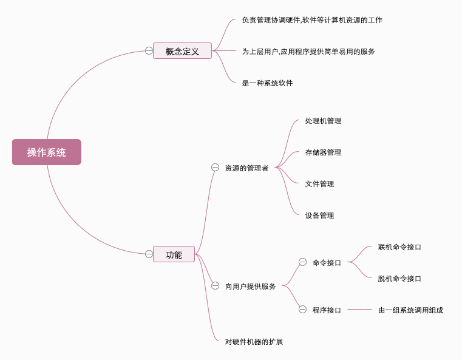
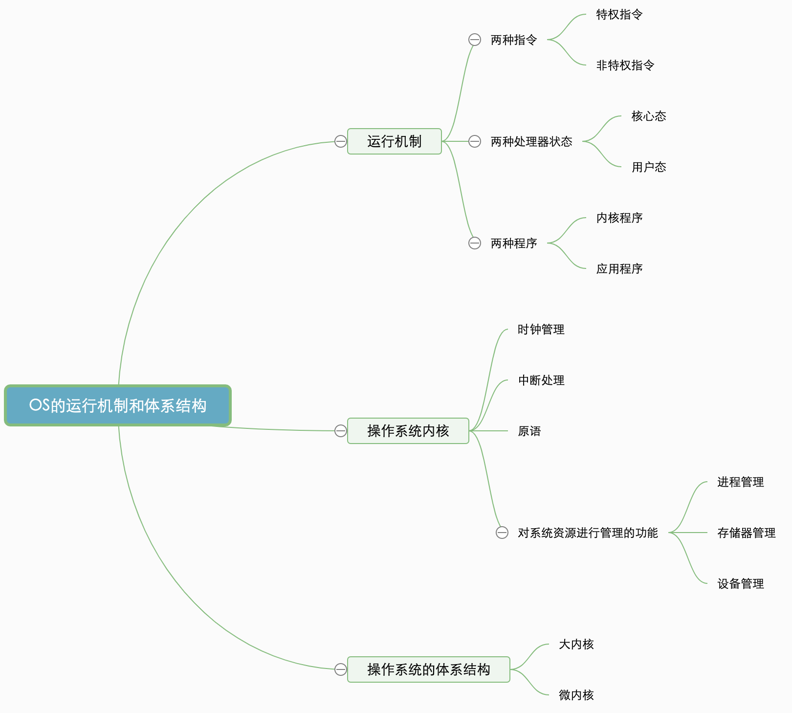

# 操作系统系统概述
# 基本概念
# 概念
操作系统 (Operating System, OS) 是指控制和管理整个计算机系统的硬件和软件资源，并合理地组织调度计算机的工作和资源的分配，以提供给用户和其他软件方便的接口和环境，它是计算机系统中最基本的系统软件。
补充知识：进程是一个程序的执行过程，执行前需要将该程序放到内存中，才能被 CPU 处理
# 脑图梳理

操作系统 作为系统资源的管理者， 操作系统 提供以下的功能
- 处理机管理
- 存储器管理
- 文件管理
- 设备管理
操作系统 作为用户和计算机硬件间的接口， 操作系统 提供以下的功能
- 命令接口：允许用户直接使用。(分为: 【联机命令 = 交互式命令接口】和【脱机命令接口 = 批处理命令接口】)
- 程序接口：允许用户通过程序间接使用，由一组
系统调用组成 1 和 2 统称为用户接口- GUI (图形用户界面)
系统调用 = 系统调用命令 = 广义指令
# 特征
- 并发
- 共享
- 虚拟
- 异步
并发和共享是两个最基本的特征，二者互为存在条件
并发：指两个或多个事件在同一时间间隔内发生。这些事件宏观上是同时发生的，微观上是交替发生的。
易混淆概念 ---- 并行：指两个或多个事件在同一时刻同时发生
一个单核处理机 (CPU) 同一时刻只能执行一个程序，因此操作系统会负责协调多个程序交替执行
共享：即资源共享，是指系统中的资源可供内存中多个并发执行的进程共同使用。
两种资源共享方式:
- 互斥共享方式 (如，对摄像头设备的共享使用)
- 同时共享方式 (如，对硬盘资源的共享使用)
虚拟：是指把一个物理上的实体变为若干个逻辑上的对应物。物理实体是实际存在的，而逻辑上对应物是用户感受到的。
虚拟技术分为 2 种
- 空分复用技术 (如虚拟存储器技术)
- 时分复用技术 (如虚拟处理器)
显然，如果失去了并发性，虚拟性也就没存在的意义了。
异步：是指在多道程序环境下，允许多个程序并发执行，但由于资源有限，进程的执行不是一贯到底的，而是走走停停，以不可预知的速度向前推进，这就是程序的异步性。
显然，如果失去了并发性，则系统只能串形地处理每个进程，如果失去了并发性，则没有异步性了。
# 操作系统的体系结构
OS 的运行机制和体系结构脑图

什么是指令：简单来说，指令就是让处理器 (CPU) 能识别、执行的最基本命令
指令分为以下 2 类
- 特权指令：如内存清零指令 【不允许用户程序使用】
- 非特权指令：如普通的运算指令
CPU如何判断当前是否可以执行特权指令？ |
处理器状态主要分为以下两种:
- 用户态（目态） 【此时 CPU 只能执行非特权指令】
- 核心态（管态） 【特权指令、非特权指令都可以执行】
操作系统采用程序状态字(PSW)寄存器中的某标志位来标识当前处理器处于什么状态。0: 用户态，1: 核心态
两种程序:
- 内核程序 (运行在核心态)
- 应用程序 (运行在用户态)
操作系统内核 (大内核) 主要被划分为以下几块
- 时钟管理：实现计时功能
- 中断处理：负责实现中断机制
- 源语： 是一种特殊的程序，处于 OS 最底层，是最接近硬件的部分。这种程序的运行具有原子性，运行时间较短、调用频繁。
以上是与硬件关联紧密的模块 (微内核)，还有一块是对系统资源进行管理的功能.(有点 OS 不把下面的内容归为 "内核功能")- 系统控制的数据结构及处理
系统控制常见操作有以下 3 种
- 进程管理. (进程状态管理、进程调度和分派、创建与撤销进程控制块等)
- 存储器管理.(存储器的空间分配与回收、内存信息保护程序、代码对换程序等)
- 设备管理. (缓冲区管理，设备分配和回收等)
系统中用来登记状态信息的数据结构有很多，如：作业控制块、进程控制块 (PCB)、设备控制块、各类链表、消息队列、缓冲区、空闲区登记表、内存分配表等。
特权指令、内核程序只能在核心态下运行
# 中断
用户态切换到核心态，是通过 中断 实现的。并且 中断 是唯一的途径
核心态切换到用户态，是通过执行一个 特权指令 ，将 程序状态字(PSW) 的标志位设置为 “用户态”
- 当
中断发生时，CPU 立即进入核心态。- 当
中断发生后，当前运行的进程暂停运行，并由操作系统内核对中断进行处理。- 对于不同的
中断信号，会进行不同的处理。
# 系统调用
应用程序通过 系统调用 请求 操作系统 的服务，这样可以保证系统的稳定性和安全性，防止用户进行非法操作。系统调用 按功能可以分为以下几类
- 设备管理：完成设备的 请求 / 释放 / 启动 等功能
- 文件管理：完成文件的 读 / 写 / 创建 / 删除 等功能
- 进程控制：完成进程的 创建 / 撤销 / 阻塞 / 唤醒 等功能
- 进程通信：完成进程间的 消息传递 / 信号传递 等功能
- 内存管理：完成内存的 分配 / 回收 等功能
流程：
1. 传递系统调用参数 --> 执行陷入指令 (用户态) --> 执行系统调用相应服务程序 (核心态) --> 返回用户程序
注意：
- 陷入指令 (interrupt) 是在用户态执行的，执行陷入指令后会立刻引发一个内中断，从而 CPU 进入核心态
- 发出系统调用请求是在用户态，而对系统调用的相应处理在核心态下进行
- 陷入指令是唯一一个只能在用户态执行，而不可在核心态执行的指令
# Q&A
用户可以通过 两种方式来使用计算机
操作系统主要向用户提供命令接口和程序接口 (系统调用)，此外还提供图形接口。
当然，图形接口其实也是调用了系统调用而实现的功能系统调用是由操作系统提供给用户的，它 。
操作系统与用户通信接口通常不包括 。
计算机开机后，操作系统最终被加载到 。